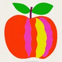

Standardy HACCP, ręczna selekcja, transport chłodzony
Dostarczamy żywność do biur - to oznacza pełną odpowiedzialność za bezpieczeństwo każdej dostawy. Nasza polityka jakości obejmuje cały łańcuch: od wyboru dostawców (certyfikacja GlobalG.A.P., Fair Trade, EU Organic), przez ręczną selekcję owoców w naszej kuchni produkcyjnej, po transport chłodzony własną flotą.
Pracujemy w systemie HACCP od pierwszego dnia. Co kwartał audytujemy łańcuch dostaw. Każda partia produktów ma dokumentację pochodzenia, datę pakowania, kontrolę temperatury w transporcie. To nie marketing - to operacyjny standard.
Cztery konkretne korzyści, z liczbami i argumentami biznesowymi.
Wszystkie procesy zgodne z normami Hazard Analysis and Critical Control Points. Audyt zewnętrzny rocznie.

GlobalG.A.P., Fair Trade, EU Organic, Rainforest Alliance. Pełna dokumentacja na żądanie.
Każdy owoc przechodzi przez ręce naszych pracowników. Odrzucamy wszystko z najmniejszymi wadami.
Własna flota z termoizolacją i kontrolą temperatury. 2-6°C utrzymywane od magazynu do biura.
Wybierz wariant albo skomponuj własny - dopasujemy.
Kwartalne wizyty u dostawców, kontrola dokumentacji, próbki kontrolne w laboratorium.
Procedury, dokumentacja, szkolenia pracowników. Reaudyt zewnętrzny co 12 miesięcy.
Każda partia: oględziny, ocena dojrzałości, sprawdzenie etykiet, foto-dokumentacja.
GPS-monitoring temperatury w transporcie. Alerty jeśli temperatura przekroczy zakres 2-6°C.
HACCP (system bezpieczeństwa żywności), współpracujemy z dostawcami z EU Organic, Fair Trade, GlobalG.A.P., Rainforest Alliance.
Tak - na żądanie wysyłamy karty pochodzenia, certyfikaty dostawców, raporty audytów. Pełen pakiet dla klientów enterprise.
Cała partia odrzucana, alternatywa wysłana w tym samym dniu lub następnym rano. Nie ryzykujemy reputacji klienta.
Wypełnij krótkie zapytanie, dopasujemy ofertę pod potrzeby Twojego zespołu. Bez zobowiązań, bez kruczków.